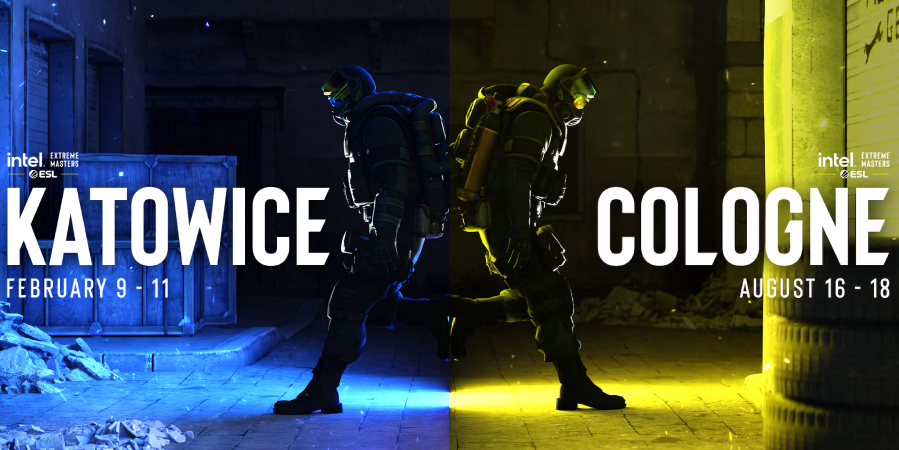
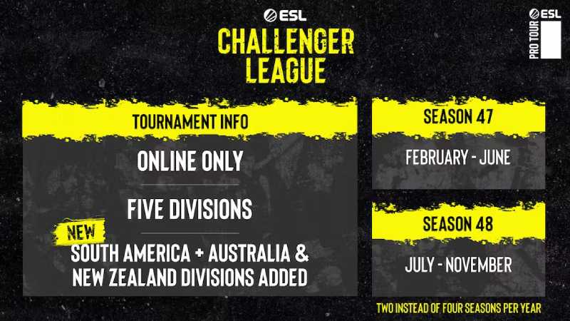

ESL telah mengumumkan program ESL Pro Tour 2024,
mengonfirmasi semua tanggal penting untuk turnamen Counter-Strike yang akan dilaksanakan pada tahun 2024 mendatang.
Semua turnamen mendatang akan dipertandingkan dalam Counter-Strike: Global Offensive.
Tanpa berlalu lama lagi, mari kita breakdown detail-detail dari event ESL yang akan hadir di Counter-Strike pada tahun 2024!

MASTER DAN KEJUARAAN TOUR ESL PRO
Berita utama adalah konfirmasi dari dua Kejuaraan ESL Pro Tour, serta lima acara Masters. Tanggal untuk acara-acara ini adalah sebagai berikut:
> IEM Katowice 2024: January 31st – February 11th
> IEM China 2024: April 8th – April 14th
> ESL Pro League Season 19: April 23rd – May 12th
> IEM Dallas 2024: May 27th – June 2nd
> IEM Cologne 2024: August 7th – August 18th
> ESL Pro League Season 20: September 3rd – September 22nd
> IEM Fall 2024: October 7th – October 13th
Ini adalah daftar menarik yang merupakan pratinjau bagus tentang apa yang CS2 profesional sediakan untuk para penggemar.
Ada banyak sekali informasi yang perlu dibongkar di sini, jadi mari kita bahas.
IEM kembali ke Tiongkok untuk pertama kalinya sejak IEM Beijing tahun 2019. Itu seharusnya kembali pada tahun 2022,
tetapi dibatalkan karena kekhawatiran COVID-19 yang sedang berlangsung. Meskipun belum ada kota tertentu yang dikonfirmasi,
diperkirakan hal ini akan diumumkan pada waktunya.

ESL Pro League Musim 19 dan 20 melihat satu perubahan besar dalam format.
Dalam iterasi mendatang, EPL hanya akan berlangsung selama tiga minggu, dibandingkan dengan lima minggu yang saat ini ditempati.
Jumlah tim akan tetap sama, dengan dua Grup dimainkan secara bersamaan, bukan satu. Secara keseluruhan,
hal ini membuat ESL Pro League tidak terlalu membebani para pemain, dan merupakan perubahan yang disambut baik.
Lalu, ada IEM Musim Gugur 2024. Meskipun belum ada lokasi yang dikonfirmasi, dapat diasumsikan bahwa ini adalah IEM Sydney atau IEM Rio.
Jika tidak, kita mungkin akan mencari lokasi yang benar-benar baru untuk acara IEM.
Dua acara Kejuaraan, IEM Katowice 2024 dan IEM Cologne 2024, memiliki tiket yang dijual masing-masing mulai tanggal 26 dan 28 September,
dengan Spodek dan Katedral Counter-Strike menghasilkan keuntungan besar untuk CS2.
ACARA TANTANGAN ESL
Pengumuman tersebut juga mencakup detail tentang semua acara ESL Challenger yang akan hadir kepada para penggemar pada tahun 2024.
Meskipun acara tersebut mungkin tidak mendapatkan sensasi yang sama seperti IEM Cologne atau Katowice,
jangan tertipu – acara ini menghadirkan Counter-Strike berkualitas tinggi pada layar.

Tanggal yang diumumkan untuk empat turnamen utama ESL Challenger pada tahun 2024 adalah:
ESL Challenger #56: April 26th – April 28th
ESL Challenger #57: June 14th – June 16th
ESL Challenger Atlanta: October 4th – October 6th
ESL Challenger #59: November 22nd – November 24th
Lokasi untuk ESL Challenger #56, #57, dan #59 belum diumumkan.
Selain acara ini, ada juga ESL Challenger League online, yang diadakan di seluruh dunia selama beberapa bulan. Untuk tahun 2024 adalah:
ESL Challenger League Season 47: February – June
ESL Challenger League Season 48: July – November
Dengan tersedianya opsi-opsi ini, Kamu tidak akan pernah ketinggalan aksi Counter-Strike kompetitif yang intens.